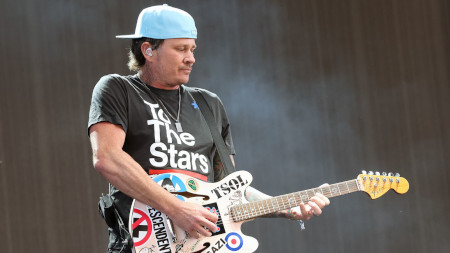
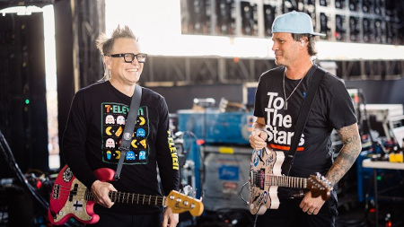
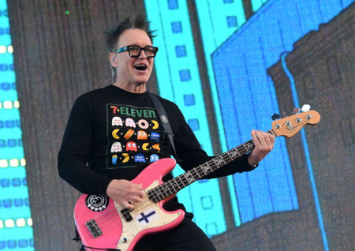
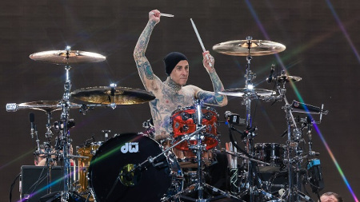

Blink-182 e seu retorno triunfal
Após dois shows “surpresa” no Coachella, o Blink-182 iniciou de fato sua nova turnê no dia 4 de maio em St. Paul, Minnesota, nos Estados Unidos. O giro mundial marca o retorno da formação clássica da banda, com Tom DeLonge novamente nos vocais e na guitarra, depois de ter deixado o trio em 2015.
Abaixo poderemos ver imagens da nova turnê:



